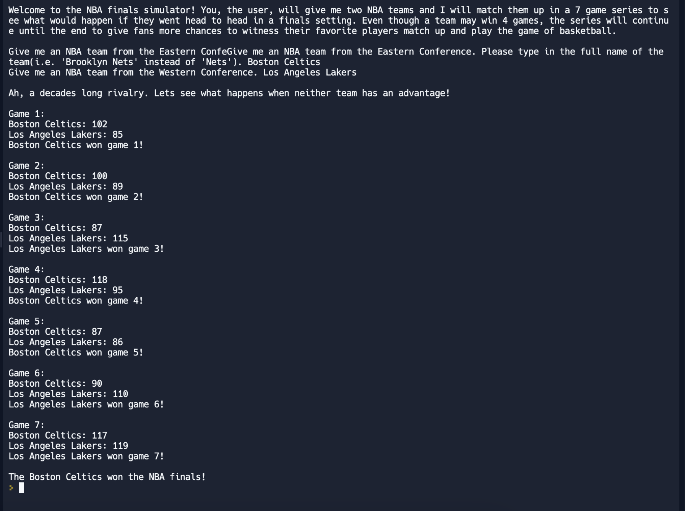

Fitsum Woldemeskel
Extracurriculars
I have done the Mayors Summer Youth Employment program for 4 summers in a row, with 2 of those summers being at the same site, Boys II Men. I also currently have a Co-op with the Amazon-owned company Audible, helping them in the DataQA team. I played basketball at CRLS for 3 years, from freshman year to junior year, playoing junior varsity as a sophomore and junior. During the 2023 summer, I volunteered at a program called Soccer Nights, where kids ages 4-13 could get a chance to learn about the sport. I have included my resume here.
Skills
Programming Languages:
- Python
- HTML
- CSS
- Java
- SQL
Projects
As of now, I don't have many projects. The only one I have is my create task that I made in my APCSP class during my Junior year. A picture of the run is included below, as well as the link to the replit.
